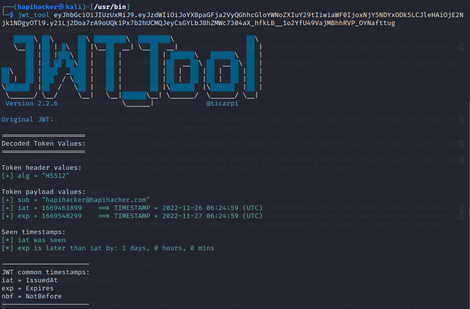
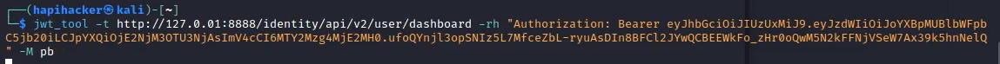

API authentication attacks
General index of the course
- Setting up the environment
- Api Reconnaissance.
- Endpoint Analysis.
- Scanning APIS.
- API Authorization Attacks.
- Exploiting API Authorization.
- Testing for Improper Assets Management.
- Mass Assignment.
- Server side Request Forgery.
- Injection Attacks.
- Evasion and Combining techniques.
- Setting up the labs + Writeups
API Authentication
Authentication Types
- Basic Authentication: username and password base64 encoded included as a HTTP Authorization header in the request:
- API Keys: there is no standard way to present the API Keys. Usually they go as a HTTP header.
- Certificate based authentication: Using TLS for authentication. It requires HTTPS and requires the API to present a certificate.
- Token based authentication: issued by a third party. Tokens are used to authenticate the caller, they can expire, they can have an audience.
- Token based authentication and authorization: Tokens can contains more information than caller id. OAuth uses scopes, OpenID Connect adds claims.
OAuth 1 and 2.0
- OAuth 1: IETF standard in 2010. Driven by twitter and google. It does not require HTTPS. Difficult to implement.
- OAuth 2: IETF standard in 2012. Widely adopted. It requires HTTPS. Easy to implement.
- OAuth 2.1: underway
The application accesses to the API on user's behalf without seeing the credentials. The user can revoke this delegation. Actors: - Resource owner - The Authorization server delegates access to the Client so it can access the resource server. - Client - Resource server.
Code flow: grant_type=authorization_code

- The user visit the application and clicks on login.
- The application generates
Code VerifierandCode Challenge. - The application redirects the user to an endpoint
/authorizein the Authorization Server with the following parameters:
PKCE stands for Proof Key for Code Exchange (PKCE).
- The Authorization Server takes the user to their own Authentication Service (with their own authentication flow).
- If successful, ...
- the Authorization Server will redirect back to a predefined callback within the client:
- The client makes a back channel call to the Authorization Server to validate the Code verifier and the challenge.
This happens in less than 30 seconds.
- The Authorization Server evaluates the previous request.
- The Authorization Server issues a token:
Code flow: grant_type=client_credentials
Everything is as in the previous code flow, but in step 7, there is a deviation:
- The client makes a back channel call to the Authorization Server to validate the Code verifier and the challenge.
- In this case, there is no user interaction. We don't get a refresh token.
Tokens
Types of tokens
Bearer Tokens: not binded to a sender. Proof of Possession Tokens (PoP) or Holder of Key Tokens (HoK): The sender needs to present a proof of ownership (prove that they have the private key)
JSON Web Tokens (JWT)
Not a protocol, but a format. JWT can be:
- Signed JWS: proves who issued the token, asymmetric signature, whitelist algorithms allowed. Doesn't rely exclusively on signature, it also verifies contents as well.
- Encrypted JWE: keeps data confidential, used in OpenID Connect, ID tokens. Not practical for access tokens. Opaque tokens are preferred to keep confidentiality.
Scopes vs Claims
Scopes define what the application can access. They are just a set of strings (they are keys, not values). They can be requested by the client. The Authorization Server makes the final decision about if a scope should be issued with the token. Scopes are used to express client privileges (and not user level privileges).
Examples: read, openid, user_invoice_read...
Claims are key value items inside the token and the are asserted by the issuer, which means that it can be used for fine grained access control.
Examples: subject=jacob, age=23, suscription_level=gold...
Gateways and APIs
They provide a layer of protection in layer 7 (firewalls - HTTP).
Introspection with exchange: Pure introspection
When we want to send a request to an API and there is a Gateway in the middle and the token is opaque (format by reference), then this gateway makes a connection with the Authorization Server to validate this token:
The Authorization Server returns a json with the value of the token
Introspection with exchange: Embedded token in JSON introspection
Or the client indicates to the gateway that they want the jwt back, even embedded into the json:
The Authorization Server returns a json with the value of the token
Introspection with exchange: token exchange
We can also use Token exchange specification, which is fairly new and it allows the gateway to call the Authorization Server and, given the token, ask for a different kind of token. The implementation of the different kinds of token are defined in the Authorization server and the documentation for this implementation should be consulted.
API to API calls
- Exchange: Use token exchange to get another token. This is used on demand. It has powerful options.
- Embed: Put tokens inside the first token. When it is known to happen on every request.
- Shared: Shared JWT. When the APIs are in the same security domain.
Classic authentication attacks
We'll consider two attacks: Password Brute-Force Attack, and Password Spraying. These attacks may take place every time that Basic Authentication is deployed in the context of a RESTful API.
The principle of Basic authentication is that the consumer issues a request containing a username and password.
As RESTful APIs don't maintain a state, the API need to leverage basic authentication across all endpoints. Instead of doing this, the API may leverage basic authentication once using an authentication portal, then upon providing the correct credentials, a token would be issued to be used in subsequent requests.
1. Password Brute-Force Attacks
Brute-forcing an API's authentication is not very different from any other brute-force attack, except you will send the request to an API endpoint, the payload will often be in JSON, and the authentication values may be base64 encoded.
Infinite ways to do it. You can use:
- Intruder module of BurpSuite.
- ZAP proxy tool.
- wfuzz.
- ffuf.
- others.
Let's see wfuzz:
Tools to build password lists: + https://github.com/sc0tfree/mentalist. + CUPP - Common User Password Profiler. + crunch (already installed in kali).
2. Password Spraying
Very useful if you know the password policy of the API we are attacking. Say that there is a lockout account policy for ten tries. Then you can password spray attack with 9 tries and use for that the 9 most probable passwords for all the accounts email spotted.
As in crapi we have detected before a disclosure of information in the forum page (a json response with all kind of data from users who have posted on the forum), we can save that json response as response.json and filter out the emails of users:
Also, using this grep command should pull everything out of a file that resembles an email. Then you can save those captured emails to a file and use that file as a payload in Burp Suite. You can then use a command like sort -u to get rid of duplicate emails.
API Authentication Attacks
To go further in authentification attacks we will need to analyze the API tokens and the way they are generated, and when talking about token generation and analysis, a word comes out inmediately: entropy.
Entropy analysis: BurpSuite Sequencer's live capture
Instructions to set up a proxy in Postman to intercept traffic with BurpSuite and have it sent to Sequencer.
Once you send a POST request (in which a token is generated) to Sequencer, you need to define the custom token location in the context menu. After that you can click on "Start Live Capture".
BurpSuite Sequencer provides two methods for token analysis:
- Manually analysing tokens provided in a text file. To perform a manual analys, you need to provide to BurpSuite Sequencer a minimum of 100 tokens.
- Performing a live capture to automatically generate tokens.
Let's focus out attention on a live capture using BurpSuite Sequencer. A live capture will provide us with 20.000 tokens automatically generated. What for?
- To elaborate a token analysis report that measures the entropy of the token generation process (and gives us precious tips about how to brute-force, or password spray, or bypass the authentication). For instance, if an API provider is generating tokens sequentially, then even if the token were 20 plus characters long, it could be the case that many of the characters in the token do not actually change.
- To have this large collection of 20.000 identities can help us to evade security controls.
The token analysis report
- The summary of the findings provides info about the quality of randomness within the token sample. The goal is to determine if there are parts of the token that do not change and other parts that often change. So full entropy would be a 100% of ramdonness (any patterns found).
- Character-level analysis provides the degree of confidence in the randomness of the sample at each character position. The significance level at each position is the probability of the observed character-level results occurring.
- Bit-level analysis indicates the degree of confidence in the randomness of the sample at each bit position.
JWT attacks
Two tools: jwt.io and jwt_tools.
To see a jwt decoded on your CLI:
Result:

Also, to see the decoded jwt, knowing that is encoded in base64, we could echo each of its parts:
Results:
To run a JWT scan with jwt_tool, run:
Example:

Some more jwt_tool flags that may come in hand:
1. The none attack
A JWT with "none" as its algorithm is a free ticket. Modify user and become admin, root,... Also, in poorly implemented JWT, sometimes user and password can be found in the payload.
To craft a jwt with "none" as the value for "alg", run:
2. The null signature attack
Second attack in this section is removing the signature from the token. This can be done by erasing the signature altogether and leaving the last period in place.
The blank password accepted in signature
Launching this attack is relatively simple. Just remove the password value from the payload and leave it in blank. Then, regenerate the jwt.
Also, with jwt_tool, run:
3. The algorithm switch (or key-confusion) attack
A more likely scenario than the provider accepting no algorithm is that they accept multiple algorithms. For example, if the provider uses RS256 but doesn’t limit the acceptable algorithm values, we could alter the algorithm to HS256. This is useful, as RS256 is an asymmetric encryption scheme, meaning we need both the provider’s private key and a public key in order to accurately hash the JWT signature. Meanwhile, HS256 is symmetric encryption, so only one key is used for both the signature and verification of the token. If you can discover the provider’s RS256 public key and then switch the algorithm from RS256 to HS256, there is a chance you may be able to leverage the RS256 public key as the HS256 key.
4. The jwt crack attack
JWT_Tool can still test 12 million passwords in under a minute. To perform a JWT Crack attack using JWT_Tool, use the following command:
Once you crack the secret of the signature, we can create our own trusted tokens. 1. Grab another user email (in the crapi app, from the data exposure vulnerability when getting the forum (GET {{baseUrl}}/community/api/v2/community/posts/recent). 2. Generate a token with the secret.
5. Spoofing JWS
Specify JWS URL with -ju, or set in jwtconf.ini to automate this attack.
Last update: 2024-09-07 Created: January 2, 2023 13:20:11